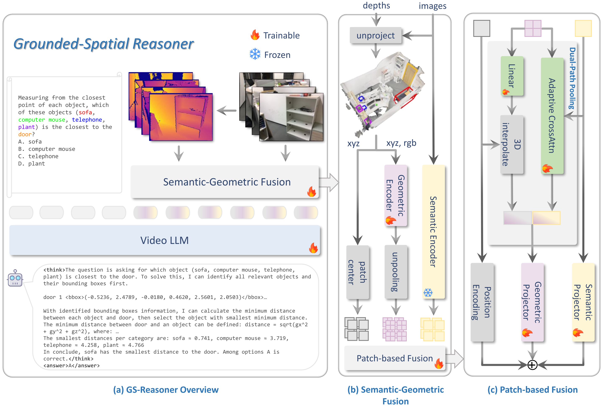

Method Overview

Overview of GS-Reasoner framework. Our method builds a semantic-geometric hybrid 3D scene representation, enabling 3D LLM to perform 3D visual grounding autoregressively, which allows grounding to be integrated as a chain-of-thought within the spatial reasoning process.